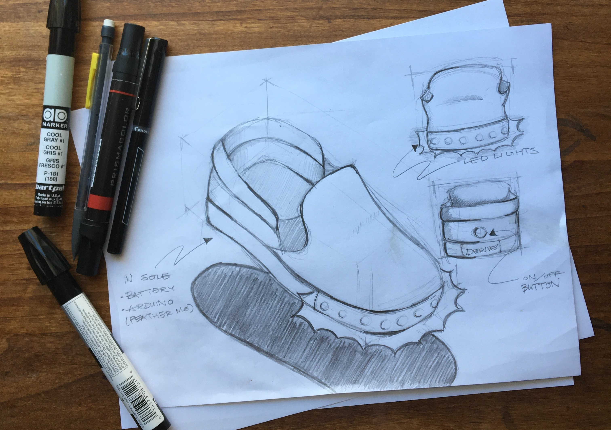

Introduction
Derive was a shoe-based project developed with Nick Doershlag, Janaki Vivrekar, Meena Kaushik, and Tonya Nguyen for Critical Making in March of 2019. We were motivated to create Derive to encourage users to explore their surroundings. Derive was built into a women’s size 6.5 leather slip-on shoe that was originally fabricated by Steve Madden. We built out a cavity in the front of the shoe in which to install a strip of programmable LED lights. The color and direction of these lights were controlled by a mobile app.
Ideating
Our goal was to encourage users to explore their surroundings by subtly suggesting them in certain directions without making them privy to their destination. To do this, we designed a shoe that guided users by lighting up portions of an LED strip attached to the front of the shoe. The portion of the shoe that lit up corresponded to the directions that they were supposed to go in. I developed the first round of shoe sketches for our product to help visualize what our final project would look like and how it should function.

Developing the Sole
We first mapped out the electronics using a cardboard shoe-sole prototype and a breadboard. We then experimented a bit with 3D printing customizable, attachable soles before deciding to modify a pre-existing shoe to house our electronics. In our final product, I took out the insole of a leather Steve Madden shoe and cut out cavities to hold a microcontroller and a lithium battery. I also drilled a channel from the front of our shoe inwards to run our LED wires into our microcontroller.
Mobile Application
My team developed an Android app that was able to establish a Bluetooth connection with the shoe. My main role in its development was conceptualizing the kind of experience it would imprint upon the user. I helped to refine how the app evoked the concept of a derive.
Future Directions
We'd like to make this project open-sourced in the future. The application is already available on Github and we envision having the fritzing diagrams and build instructions available on a DIY platform.